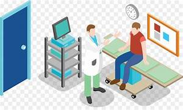

Nessa clínica, uma equipe de profissionais altamente qualificados, incluindo médicos ortopedistas, fisioterapeutas e outros especialistas em saúde, trabalha em conjunto para fornecer cuidados abrangentes e personalizados aos pacientes.
Ao visitar uma clínica ortopédica, os pacientes passam por uma avaliação médica minuciosa, que pode incluir exames clínicos, radiografias, ressonâncias magnéticas ou outros exames de imagem, a fim de obter um diagnóstico preciso. Com base nesse diagnóstico, um plano de tratamento individualizado é desenvolvido, levando em consideração as necessidades específicas do paciente.
Os tratamentos oferecidos podem variar desde métodos não invasivos, como fisioterapia, medicamentos e terapias de reabilitação, até procedimentos cirúrgicos, quando necessário. A clínica ortopédica também pode oferecer serviços de acompanhamento pós-operatório e reabilitação física para ajudar os pacientes a se recuperarem totalmente e retornarem às suas atividades diárias normais.
Além disso, a clínica ortopédica pode fornecer orientações e medidas preventivas para ajudar a prevenir lesões e manter a saúde musculoesquelética, como programas de exercícios, ergonomia e educação sobre postura adequada.
Em resumo, uma clínica ortopédica é um local especializado em cuidar do sistema musculoesquelético, oferecendo diagnóstico preciso, tratamento abrangente e reabilitação eficaz para pacientes com lesões ou doenças relacionadas aos ossos, articulações, músculos e tecidos conectivos.